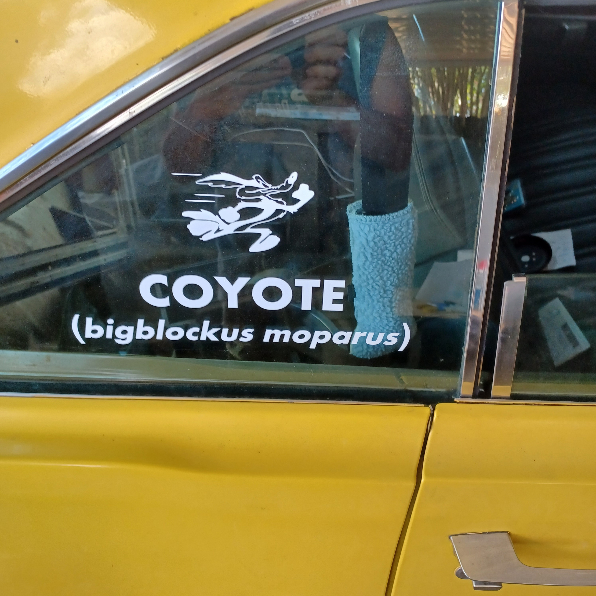
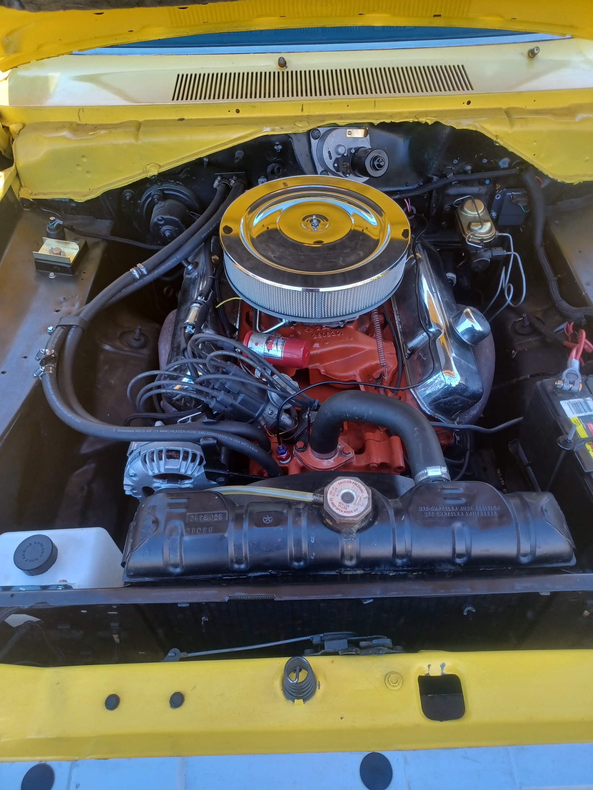
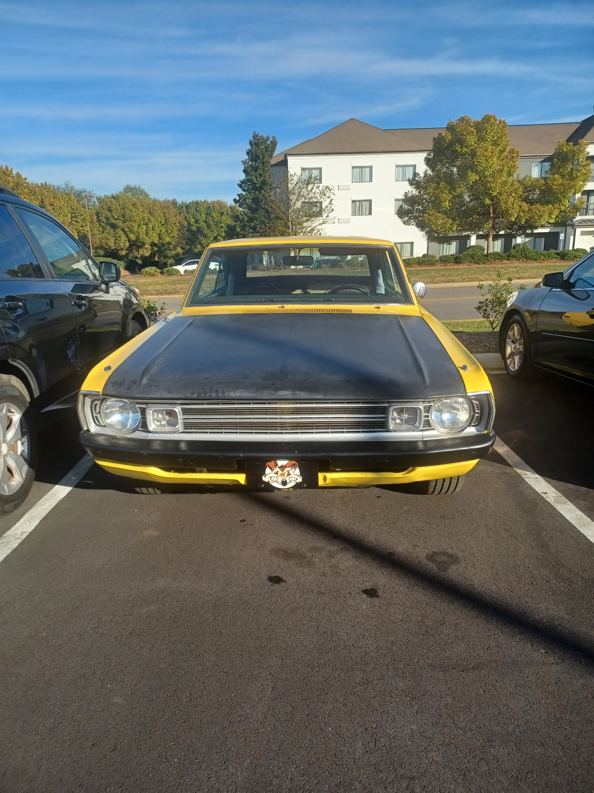
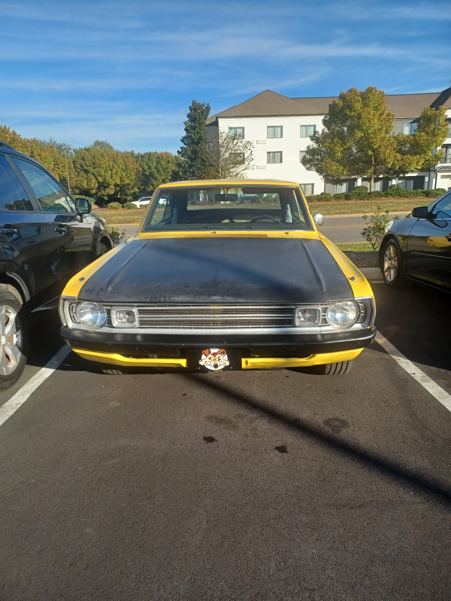
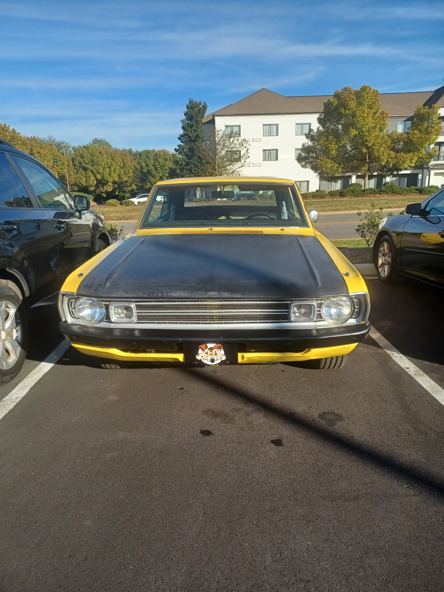
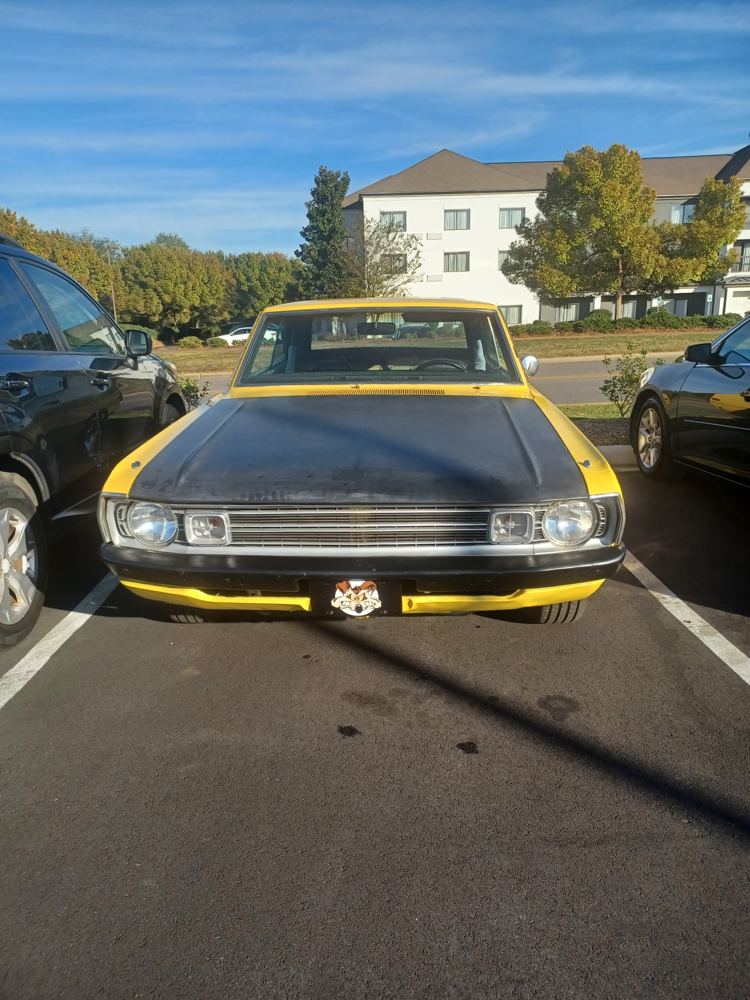

Gallery


 


A Dart Swinger turned into a roaring beast with a 383 Magnum engine.
"72 Dodge Coyote. Came from the factory a Dart Swinger, sometime in its life a 69 Dart GTS powertrain was put in it. 383 Magnum engine with automatic transmission, and a 8.75 inch rear end with 3:23 gears. The only modifications are a Brawler 750 with vacuum secondaries carburetor, and I am in the process of changing the exhaust manifolds to tri-y headers due to a broken driver side manifold. I hope to put a sure-grip carrier in the rear end and keep the same gears."
- Grandpa Steve
